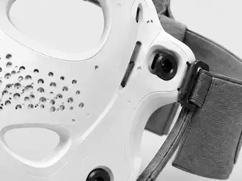

Fit
Consistent contact and positioning designed around facial geometry.
Platform
SerotoniX™ is being developed as an activation system—not a stimulator placed inside a mask.

System architecture
Fit-adapted facial interface. Positions the system around the individual face.
Controlled electrical stimulation. Delivers programmable activation within verified parameters.
Repeatable electrode placement. Reduces session-to-session positioning variability.
Guided software and traceability. Supports setup, delivery records, completion and faults.
The real USP
Competitors can source electrical stimulation. Defensibility must come from control over fit, placement, protocol, target engagement, data and exact claims.
Consistent contact and positioning designed around facial geometry.
Validated combinations of location, intensity, timing and sequence.
Objective evidence that intended muscles or facial action units were activated.
Completion, tolerance, response and usage patterns within validated limits.
Studies designed around exact cosmetic, experience or future clinical outcomes.
Planned continued work with UHN and KITE, subject to approval and final agreements.
Why the problem matters
Handheld products leave placement, direction, pressure, contact and routine completion heavily dependent on user technique.
Found manually each session
Fit-guided and repeatable
Pressure and angle vary
Interface contact monitored
Technique can alter delivery
Bounded protocol parameters
Often self-reported or unknown
Recorded session completion
Usually inferred
Objective validation pathway
Product experience
The target user response is: “I look more awake, feel more activated and am ready to show up.” This remains a product-development target, not a validated claim.
Morning, between meetings, pre-event or evening transition.
Guided positioning confirms interface contact.
A short routine activates predefined facial targets.
The app confirms delivery and invites a brief check-in.
Preferences and tolerance inform bounded routine selection.

Research-ready architecture
The first objective is not algorithmic personalisation. It is reliable fit, safe delivery, target engagement and clear session records.
Next